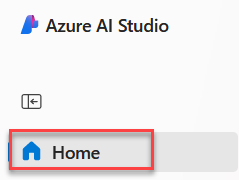
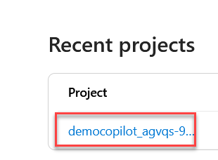

Extracting valuable information from text is known as Named Entity Recognition (NER). Entities are key words that are of interest to you in a given text.
Large Language Models (LLMs) can be used to perform NER. To create an application that takes a text as input and outputs entities, you can create a flow that uses a LLM node with prompt flow.
In this exercise, you’ll use Azure AI Studio’s prompt flow to create an LLM application that expects an entity type and text as input. It calls a GPT model from Azure OpenAI through a LLM node to extract the required entity from the given text, cleans the result and outputs the extracted entities.

You first need to create a project in the Azure AI Studio to create the necessary Azure resources. Then, you can deploy a GPT model with the Azure OpenAI service. Once you have the necessary resources, you can create the flow. Finally you’ll run the flow to test it and view the <<<<<<< HEAD sample output. ### Prompt flow
Click on the Build tab in the top navigation
Then click on Prompt flow in the navigation
Then click on the Create button
======= sample output.Click the Home button in the top left navigation.

Click your project from recent projects.

Click Prompt flow on the left navigation then click + Create.
>>>>>>> b98290478187d01081da045c0adb6a52dc30cc29In the popup click on Create for the Standard flow
=======In the dialog that appears, click Create under Standard flow.
>>>>>>> b98290478187d01081da045c0adb6a52dc30cc29In the popup leave the defaults and click Create
=======In the Create a new flow pane that appears, change the Folder name to entity-recognition and click Create.
>>>>>>> b98290478187d01081da045c0adb6a52dc30cc29Rename the flow, by clicking the pencil icon, to
entity-recognition
To test your flow, you need compute. The necessary compute is made available to you through the runtime.
entity-recognition, the flow should open in the
studio.After creating the new flow that you named
entity-recognition, the flow should open in the
studio.
Select Start in the Runtime dropdown at the top of the page to start the automatic runtime.
Wait a few minutes for the run time to be completed.
The flow you’ll create will take two inputs: a text and the type of entity you want to extract from the text.
topic of type string. Change the existing
input and update with the following settings:
entity_typestringjob titletextstringThe software engineer is working on a new update for the application.In the Inputs section, enter the following information:
Name: entity_type
Type: string
Value: job title
Click + Add input.
Enter the following information for the second input.
Name: text
Type: string
Value: The software engineer is working on a new update for the application.
The standard flow already includes a node that uses the LLM tool. You can find the node in your flow overview. The default prompt asks for a joke. You’ll update the LLM node to extract entities based on the two inputs specified in the previous section.
Navigate to the LLM node named
joke.
Replace the name with NER_LLM
For Connection, select the OpenAI connection previously created.
For deployment_name, select the
gpt-35-turbo model you deployed.
Replace the prompt field with the following code:
=======Select the LLM node, Joke, on the right pane.
Click the pencil icon then replace the text with <<<<<<< HEAD NER_LLM and press Enter to rename the ======= NERLLM and press Enter to rename the >>>>>>> 862be56e488305ee4344e19bbe5b3ec211401b29 node.
In the Connection dropdown, select the OpenAI connection created earlier in the lab.

In the deployment_name dropdown, select the gpt-35-turbo model deployed earlier in the lab.
Replace the contents of the Prompt field with the following. Then click Validate and parse input.
>>>>>>> b98290478187d01081da045c0adb6a52dc30cc29# system:
Your task is to find entities of a certain type from the given text content.
If there're multiple entities, please return them all with comma separated, e.g. "entity1, entity2, entity3".
You should only return the entity list, nothing else.
If there's no such entity, please return "None".
# user:
Entity type: {{entity_type}}
<<<<<<< HEAD
Text content: {{text}}Select Validate and parse input.
Within the LLM node, in the Inputs section, configure the following:
entity_type, select the value
${inputs.entity_type}.text, select the value
${inputs.text}.In the NET_LLM section, under =======
In the NETLLM section, under >>>>>>> 862be56e488305ee4344e19bbe5b3ec211401b29 Inputs, enter the following information.
entity_type: ${inputs.entity_type}
text: ${inputs.text}
Your LLM node will now take the entity type and text as inputs, include it in the prompt you specified and send the request to your deployed model.
To extract only the key information from the result of the model, you can use the Python tool to clean up the output of the LLM node.
Navigate to the Python node named echo.
Replace the name with cleansing.
Replace the code with the following:
=======Select the Python node, echo, on the right pane.
Click the pencil icon then replace the text with cleansing and press Enter to rename the node.
Replace the contents of the Code section with the following then click Validate and parse input.
>>>>>>> b98290478187d01081da045c0adb6a52dc30cc29from typing import List
from promptflow import tool
@tool
def cleansing(entities_str: str) -> List[str]:
# Split, remove leading and trailing spaces/tabs/dots
parts = entities_str.split(",")
cleaned_parts = [part.strip(" \t.\"") for part in parts]
entities = [part for part in cleaned_parts if len(part) > 0]
return entities
<<<<<<< HEAD
Select Validate and parse input.
Within the Python node, in the Inputs section,
set the value of entities_str to
${NER_LLM.output}.
In the Cleansing section, under Inputs, enter the following information.
Finally, you can configure the output of the whole flow. You only want one output to your flow, which should be the extracted entities.
entities.${cleansing.output}.In the Outputs section, enter the following information then click Save.
Name: entities
Value: ${cleansing.output}
Now that you’ve developed the flow, you can run it to test it. Since you’ve added default values to the inputs, you can easily test the flow in the studio.
Select Run to test the flow.
Wait until the run is completed.
Select View outputs in the NEW_LLM. A pop-up should appear showing you the output for the default inputs. Optionally, you can also inspect the logs.
Select Run to test the flow.
Wait until the run is completed.
Select View full output in the <<<<<<< HEAD NER_LLM section. A dialog should appear showing you the ======= NERLLM section. A dialog should appear showing you the >>>>>>> 862be56e488305ee4344e19bbe5b3ec211401b29 output for the default inputs. Optionally, you can also inspect the logs.